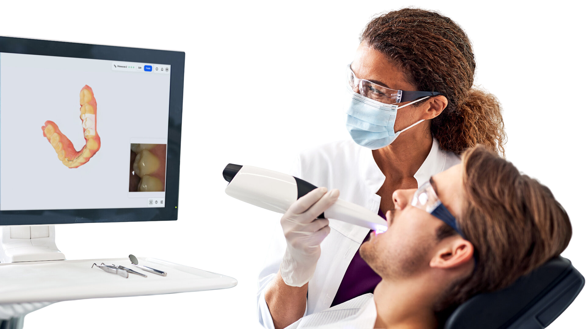
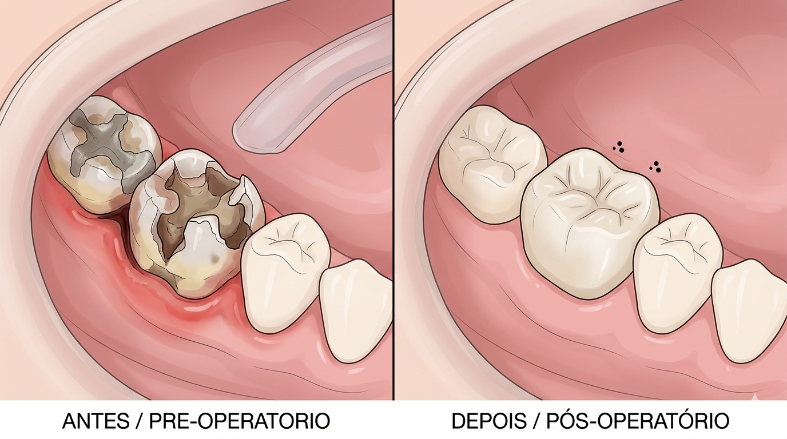
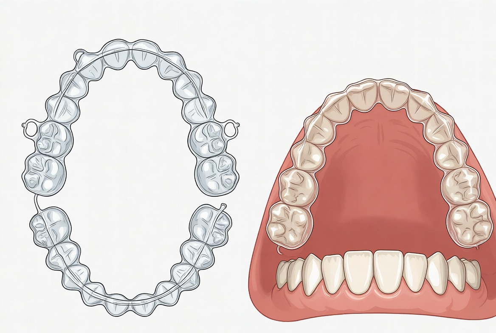
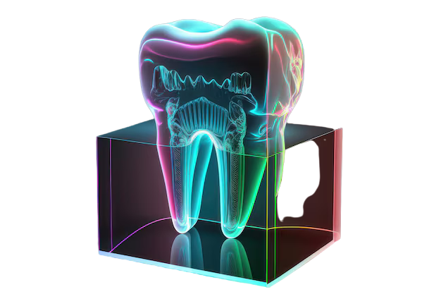

Odontologia Digital · Fluxo CAD/CAM
CAD/CAM na Prática Odontológica
Da moldagem em gesso ao fluxo totalmente digital: como softwares CAD/CAM, scanners intraorais e fresadoras estão redefinindo a previsibilidade clínica.
Duração
~25 minutos · 16 slides focados em aplicação clínica.

Mapa da apresentação
Uma visão guiada do percurso em ~25 minutos, da base conceitual aos casos clínicos.
Fundamentos
- Linha do tempo do CAD/CAM na odontologia.
- Conceitos centrais de CAD, CAM e fluxo digital.
Mão na massa clínica
- Coroas, pontes, implantes e ortodontia digital.
- Softwares em destaque e ecossistemas típicos.
Julgando criticamente
- Prós, contras e limites vs métodos tradicionais.
- Materiais: zircônia, dissilicato e resinas híbridas.
Casos e futuro
- Três casos clínicos ilustrativos.
- IA, impressão 3D e horizonte da odontologia digital.
Do gesso ao digital
Uma linha do tempo compacta mostrando a migração da era analógica ao CAD/CAM.
-
Antes de 1980
Era analógica
Moldagens em alginato/silicone, modelos em gesso e múltiplos passos manuais, com maior risco de distorções e erros cumulativos.
-
Anos 1980
Primeiras soluções CAD/CAM
A busca por restaurações cerâmicas mais resistentes e precisas impulsiona os primeiros sistemas computadorizados de desenho e fresagem.
-
1985
CEREC 1 · marco chairside
Werner H. Mörmann apresenta o CEREC 1, permitindo inlays cerâmicos em sessão única diretamente na clínica, inaugurando o conceito chairside.
-
1990–2009
Escaneamento e CNC
Consolidação de scanners intraorais, sistemas CAD de laboratório e fresadoras CNC, aproximando laboratório e consultório.
-
2026
CAD/CAM como novo padrão
Em consultórios modernos, mais de metade das restaurações fixas já envolvem fluxo digital, especialmente com zircônia e cerâmicas avançadas.
Conceitos-chave: CAD e CAM
Como o fluxo digital traduz anatomia em restaurações previsíveis.
CAD · Computer-Aided Design
Criação de modelos 3D virtuais a partir de scans digitais, com controle anatômico, oclusal e de contatos proximais em ambiente simulado.
- Ajustes em tempo real sobre o modelo 3D.
- Simulação de contatos oclusais e guias funcionais.
- Bibliotecas anatômicas e workflows guiados.
CAM · Computer-Aided Manufacturing
Conversão do projeto virtual em uma peça física, via fresagem ou impressão 3D em cerâmica, resina ou metais.
- Fresadoras CNC chairside ou de laboratório.
- Impressoras 3D para guias cirúrgicos e provisórios.
- Protocolos de sinterização, glaze e acabamento.
Métodos tradicionais
100–200 μm
Mais etapas manuais e distorções
Tempo total
-0%
Menos consultas e retrabalhos
Fluxo digital CAD/CAM
Do scan à cimentação em um pipeline contínuo e rastreável.

1. Escaneamento intraoral
Scanner óptico substitui moldes de silicone tradicionais.
Saída: STL / PLY
→
2. Importação no CAD
Análise oclusal e marginal, definição de limites e eixos de inserção.
→
3. Design virtual
Coroa ou prótese com simulação estática e dinâmica da função.
→
4. Exportação para CAM
Fresagem ou impressão 3D conforme o material e a indicação clínica.
→
5. Acabamento e cimentação
Glaze, sinterização (quando necessário) e prova clínica com ajuste fino.
Aplicações clínicas principais
Onde o CAD/CAM muda o jogo no dia a dia assistencial.
Coroas unitárias
Restaurações monolíticas em zircônia com taxas de sobrevivência em torno de 95–100% em 5 anos em diferentes estudos clínicos.
Pontes fixas
Próteses de 3–6 elementos com sobrevivência aproximada de 89–91% em 5 anos, quando bem indicadas e cimentadas.
Implantes
Guias cirúrgicos e pilares personalizados com desvios geralmente inferiores a 1 mm, aumentando previsibilidade e segurança cirúrgica.
Ortodontia digital
Alinhadores transparentes e brackets indiretos personalizados, permitindo tratamentos 20–30% mais rápidos com alta precisão de posicionamento.
Guias e mockups
Guias de preparo, mockups de sorriso e prototipagem rápida para planejamento estético e funcional centrado no paciente.
Softwares CAD/CAM em destaque
Três ecossistemas que você provavelmente encontrará na prática.
Exocad
Plataforma flexível, forte em implantes e casos complexos, voltada para laboratórios e usuários avançados.
3Shape · Dental System
Interface guiada e amigável, adaptada ao uso clínico/chairside e ortodontia, integrada ao ecossistema TRIOS.
CEREC · Dentsply Sirona
Sistema chairside completo para restaurações em sessão única, com fluxo integrado e ecossistema mais fechado.
Comparando ecossistemas CAD/CAM
Cada software com seu foco — o essencial é alinhar com seu perfil de serviço.
| Software | Facilidade de uso | Aplicações principais | Compatibilidade | Faixa de preço | Adoção |
|---|---|---|---|---|---|
| Exocad | Intermediária / avançada | Implantes complexos, reabilitações extensas, laboratório | Sistema aberto, alta compatibilidade com scanners e fresadoras | Média–alta (licenças modulares) | Alta em laboratórios e centros de planejamento |
| 3Shape Dental System | Alta, interface guiada | Clínica, ortodontia, próteses fixas e removíveis | Integração forte com TRIOS; boa compatibilidade com outros sistemas | Alta (pacotes clínicos completos) | Ampla em clínicas com fluxo digital |
| CEREC | Alta para uso chairside | Coroas e inlays/onlays em sessão única | Ecossistema mais fechado (scanner + fresadora próprios) | Alta (investimento em sistema integrado) | Forte em consultórios focados em “same-day dentistry” |
Vale a pena? Prós e contras
O balanço entre precisão, custo e curva de aprendizado.
Vantagens do CAD/CAM
- Precisão marginal < 50 μm em fluxos bem ajustados.
- Redução de 50–70% no tempo total de tratamento.
- Menos desconforto (sem moldes volumosos de silicone).
- Alta satisfação do paciente (> 90% relatam experiência positiva).
Desvantagens / desafios
- Investimento inicial elevado em equipamentos e softwares.
- Curva de aprendizado para equipe clínica e laboratório.
- Dependência de energia, conectividade e suporte técnico.
- Risco de chipping em determinadas cerâmicas, geralmente manejável sem remoção total.
Materiais no universo CAD/CAM
Escolher o material adequado é tão crítico quanto dominar o software.
Zircônia (ZrO₂)
Alta resistência flexural, frequentemente na faixa de 900–1200 MPa, ideal para região posterior e pilares sobre implantes.
Sobrevivência em 5 anos muito elevada em diversos estudos clínicos.
Dissilicato de lítio
Cerâmica vítrea com alta translucidez e estética, excelente para coroas anteriores, facetas e onlays estéticos.
Equilíbrio robusto entre estética e resistência mecânica.
Resinas compostas híbridas
Indicações relevantes para provisórios e alguns casos definitivos, com módulo elástico próximo ao da dentina.
Boa opção para abordagens transitórias ou minimamente invasivas.
CAD/CAM vs métodos tradicionais
Uma “luta de cards” entre o fluxo digital e o analógico.
Fluxo CAD/CAM
- Precisão marginal < 0 μm
- Tempo total 1–2 visitas
- Satisfação do paciente 0%
- Sobrevivência em 5 anos ~90–98%
- Custo inicial Alto (equipamentos e softwares)
VS
Métodos tradicionais
- Precisão marginal 100–200 μm
- Tempo total 3–4 visitas
- Satisfação do paciente ~80–85%
- Sobrevivência em 5 anos Alta, porém com maior necessidade de retrabalho.
- Custo inicial Baixo (infraestrutura consolidada)
Caso 1 · Coroa posterior em uma sessão
Fluxo chairside completo em um molar fraturado.

Paciente: 45 anos, molar inferior fraturado.
Problema: Dor à mastigação e restauração extensa fraturada.
Plano digital
- Escaneamento intraoral completo da arcada inferior.
- Design virtual de coroa monolítica em zircônia.
- Ajustes oclusais realizados no modelo digital.
Resultado
- Fresagem chairside e cimentação na mesma sessão.
- Redução de 2–3 consultas para apenas 1 visita.
- Alta satisfação e retorno rápido à função mastigatória.
Caso 2 · Ponte implante-suportada com guia
Integração de planejamento 3D, guia cirúrgico e prótese.
Paciente: 60 anos, ausência de 3 elementos posteriores.
Problema: Espaço protético limitado e anatomia óssea delicada.
Plano digital
- Tomografia e scan intraoral integrados em software 3D.
- Planejamento virtual da posição ideal dos implantes.
- Confecção de guia cirúrgico CAD/CAM personalizado.
Resultado
- Desvios de posicionamento < 1 mm em relação ao planejamento.
- Ponte de 3 elementos com mínimo ajuste oclusal.
- Tempo cirúrgico reduzido e pós-operatório mais previsível.
Caso 3 · Ortodontia com alinhadores digitais
Tratamento guiado por software, do planejamento ao set final.

Paciente: 28 anos, apinhamento anterior moderado.
Problema: Demanda estética e busca por tratamento discreto.
Plano digital
- Escaneamento intraoral e planejamento virtual do setup final.
- Sequência de alinhadores com movimentos controlados.
- Checkpoints digitais a cada 6–8 semanas.
Resultado
- Tratamento estimado 20–30% mais rápido que técnicas convencionais.
- Alto controle de posicionamento de cada dente.
- Experiência estética e confortável para o paciente.
Futuro da odontologia digital
O que esperar até 2030 e além em IA, materiais e integração.

IA no design automatizado
Algoritmos propondo desenhos de coroas, pontes e planos de tratamento com base em grandes bases de dados e simulações preditivas.
Impressão 3D multimaterial
Estruturas com diferentes propriedades mecânicas e estéticas em uma única peça, incluindo bioimpressão e scaffolds personalizados.
Digital como novo padrão
Projeções indicam a maioria das clínicas com algum grau de fluxo digital integrado até 2030, guiadas por demanda estética e eficiência.
Mais do que “ter um scanner”, a pergunta passa a ser: como integrar dados, IA e biomateriais de forma ética e centrada no paciente?
Encerrando: CAD/CAM como aliado
Tecnologia a serviço do raciocínio clínico, não como fim em si mesma.
Ideias-chave
- Fluxo digital reduz tempo e aumenta previsibilidade clínica.
- Softwares e materiais devem seguir o perfil da clínica.
- O olhar crítico do clínico permanece insubstituível.
Para levar pra casa
- Explore um software por vez, de forma estruturada.
- Comece por indicações simples, como coroas unitárias.
- Construa parcerias sólidas com laboratório digital.
Obrigado! · Perguntas, casos e experiências de vocês são muito bem-vindos.